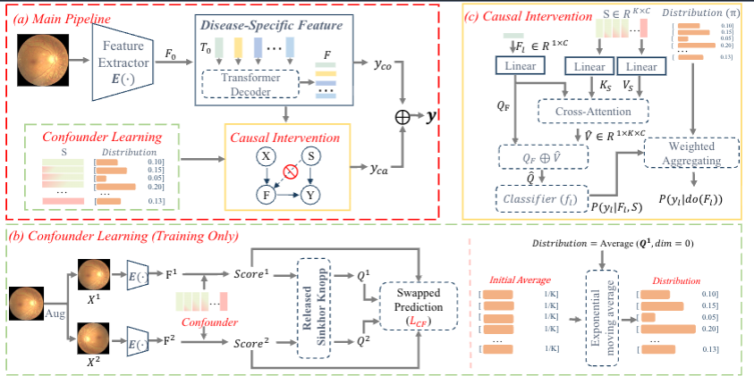
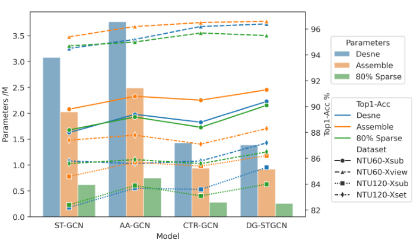
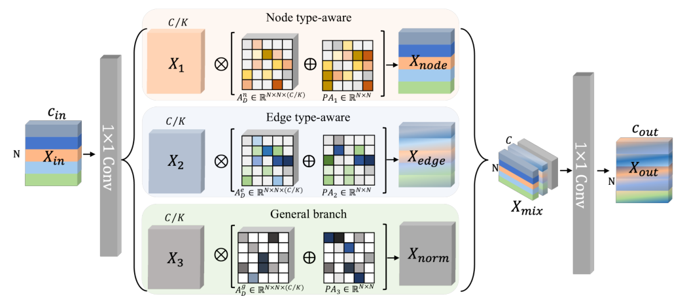
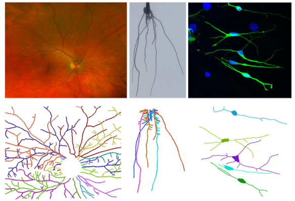
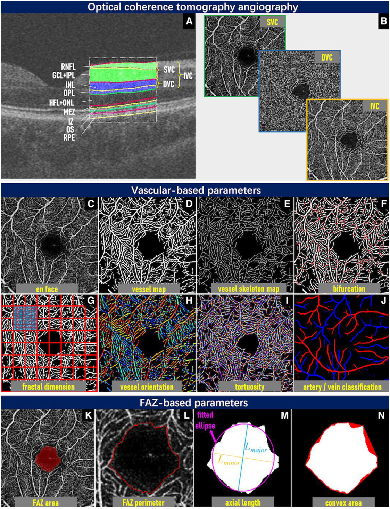
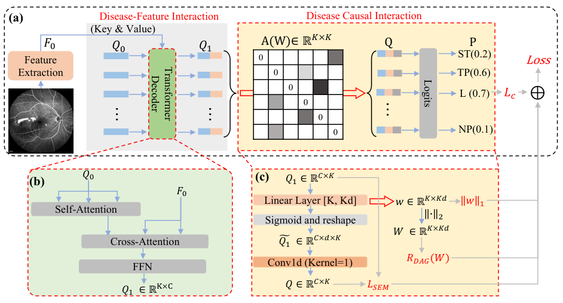
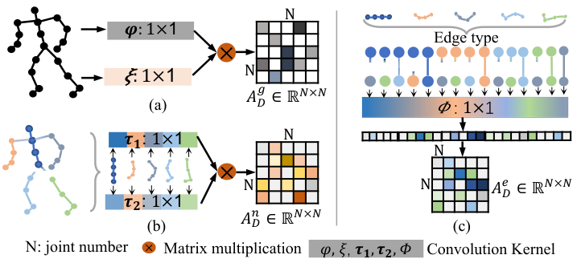

Medical AI · Computer Vision
Jianyang Xie PhD Postdoctoral Research AssistantUniversity of Liverpool , United Kingdom
I develop methods for medical image analysis and representation learning , with a focus on foundation models, trustworthy AI, and ophthalmic imaging. My work connects retinal and corneal imaging with clinically relevant diagnosis and biomarker discovery.
I received my PhD from the University of Liverpool’s Centre for Doctoral Training in Distributed Algorithms, where I studied skeleton-based human action recognition. Before that, I worked on retinal vessel topology and biomedical image analysis.
Download Academic CV (PDF) →
Jianyang.Xie2@liverpool.ac.uk
Research interests
Learning & reasoning Medical foundation models · Self-supervised learning · Causal learning · Graph representations
Imaging & applications Retinal imaging · Corneal confocal microscopy · Dementia biomarkers · Multi-label diagnosis
Clinical translation External validation · Cross-device generalisation · Robust and interpretable predictions Recent highlights 2026 Beyond Correlation — causal intervention for multi-label medical image diagnosis, IEEE TMI.2025 Are ST-GCNs over-parameterized? — efficient graph learning for human action recognition, CVPR.Aug 2025 Started my postdoctoral role at Liverpool, developing AI-powered tools for dementia diagnosis and prediction. Selected work in medical imaging and computer vision. Click a figure to view it at full size.

IEEE Transactions on Medical Imaging · 2026
Beyond Correlation: Causal Intervention for Multi-Label Medical Image Diagnosis Jianyang Xie , Yitian Zhao, Xiuju Chen, Yanda Meng, He Zhao, Uzaman Alam, Xiaoxin Li, Yalin Zheng

CVPR · 2025
Are Spatial-Temporal Graph Convolution Networks for Human Action Recognition Over-Parameterized? Jianyang Xie , Yitian Zhao, Yanda Meng, He Zhao, Anh Nguyen, Yalin Zheng

IEEE Transactions on Image Processing · 2024
Dynamic Semantic-Based Spatial-Temporal Graph Convolution Network for Skeleton-Based Human Action Recognition Jianyang Xie , Yanda Meng, Yitian Zhao, Anh Nguyen, Xiaoyun Yang, Yalin Zheng

CVPR · 2019
Topology Reconstruction of Tree-like Structure in Images via Structural Similarity Measure and Dominant Set Clustering Jianyang Xie , Yitian Zhao, Yonghuai Liu, Pan Su, Yalin Zheng, Yifan Zhao, Jun Cheng, Jiang Liu

British Journal of Ophthalmology · 2024 (online 2023)
Deep Segmentation of OCTA for Evaluation and Association of Changes of Retinal Microvasculature with Alzheimer's Disease and Mild Cognitive Impairment Jianyang Xie , Quanyong Yi, Yufei Wu, Yalin Zheng, et al.

MICCAI · 2024
Multi-disease Detection in Retinal Images Guided by Disease Causal Estimation Jianyang Xie , Xiuju Chen, Yitian Zhao, Yanda Meng, He Zhao, Anh Nguyen, Xiaoxin Li, Yalin Zheng

AAAI · 2024
Dynamic Semantic-Based Spatial Graph Convolution Network for Skeleton-Based Human Action Recognition Jianyang Xie , Yanda Meng, Yitian Zhao, Anh Nguyen, Xiaoyun Yang, Yalin Zheng
Research projects Research schematic Foundation models
Foundation Models for Retinal Imaging Self-supervised representations for ultra-widefield retinal images, with an emphasis on disease recognition and generalisation across cohorts and devices.
Discuss this work → Research schematic Imaging biomarkers
Corneal Imaging for Dementia Foundation-model representations and longitudinal analysis of corneal confocal microscopy for dementia diagnosis, prediction and biomarker discovery.
Project background → Original TMI framework Causal medical AI
Counterfactual Diagnostic Reasoning Interventions on disease-specific representations to investigate dependencies in multi-label diagnostic predictions.
Code · BankCausal →